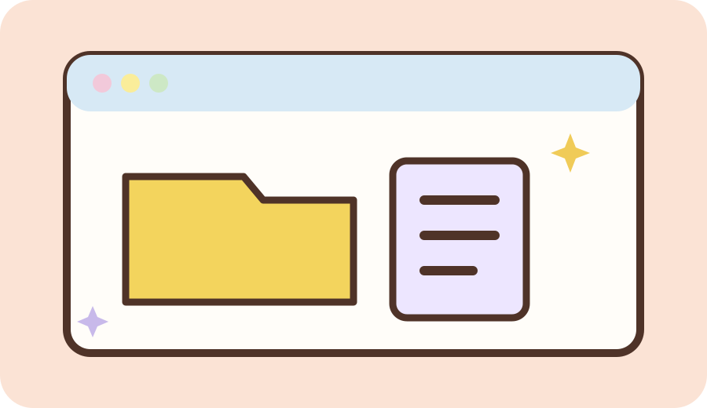
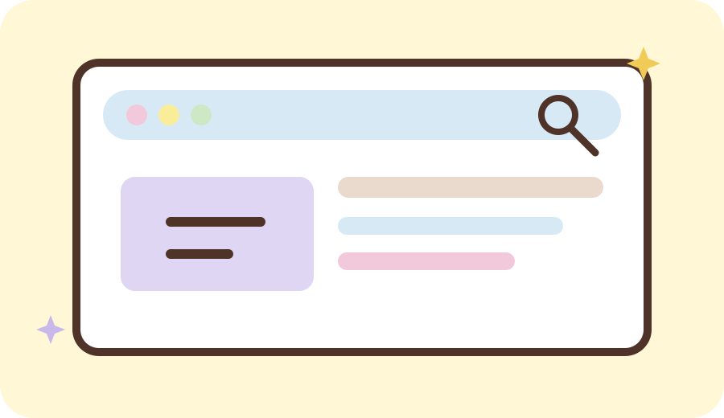
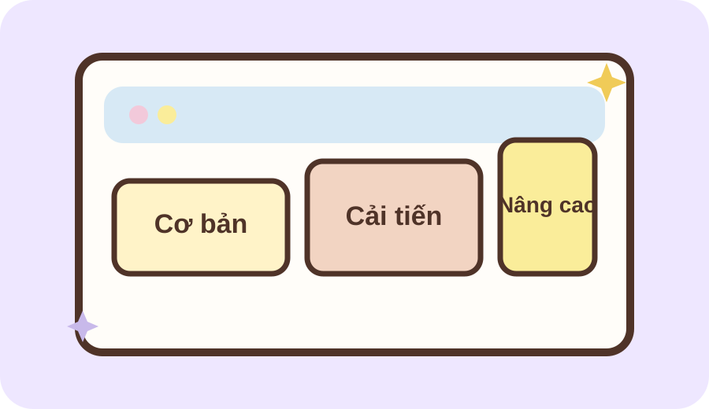
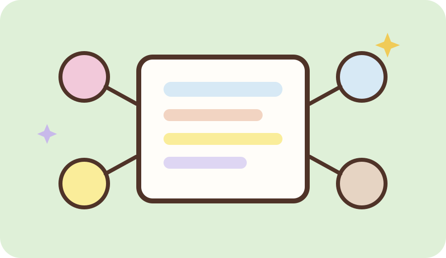
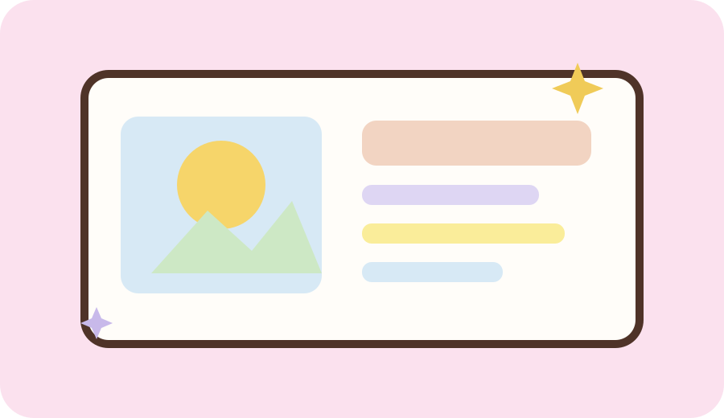
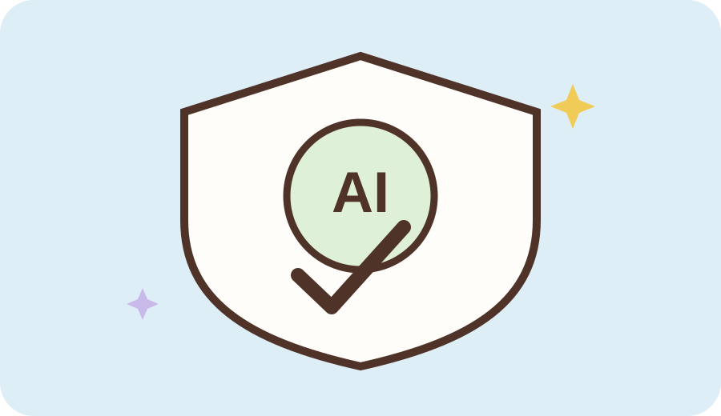

Portfolio học tập · VNU1001
Nguyễn Thị
Khánh Ly
Mình là sinh viên ngành Ngôn ngữ Pháp. Portfolio này là nơi mình lưu lại những bài thực hành trong học phần Nhập môn Công nghệ số & Ứng dụng Trí tuệ nhân tạo. Mỗi bài đều đánh dấu một bước trong quá trình học tập, từ tìm hiểu kiến thức đến hoàn thiện sản phẩm và rút ra những điều mình học được.
- Họ tên: Nguyễn Thị Khánh Ly
- MSSV: 25041429
- Lớp: VNU1001_E252064
- Email: 4m.xzys3e@gmail.com

Nội dung học tập
06 bài thực hành
Portfolio này lưu lại các sản phẩm học tập và những điều mình rút ra trong quá trình sử dụng công nghệ số và AI.

Bài 01Kỹ năng số nền tảng
Thao tác cơ bản với tệp tin và thư mục
Xem bài làm
Bài 02Nghiên cứu & đánh giá nguồn
Tìm kiếm và đánh giá thông tin học thuật
Xem bài làm
Bài 03Prompt engineering
Viết prompt hiệu quả cho các tác vụ học tập
Xem bài làm
Bài 04Làm việc nhóm số
Sử dụng công cụ hợp tác trực tuyến cho dự án nhóm
Xem bài làm
Bài 05Sáng tạo nội dung số
Sử dụng AI tạo sinh để hỗ trợ sáng tạo nội dung
Xem bài làm
Bài 06Đạo đức & minh bạch
Sử dụng AI có trách nhiệm trong học tập và nghiên cứu
Xem bài làmGiới thiệu
Nguyễn Thị Khánh Ly
- Họ và tên
- Nguyễn Thị Khánh Ly
- Ngành học
- Ngôn ngữ Pháp
- Mã sinh viên
- 25041429
- Lớp
- VNU1001_E252064
- Sở thích
- Âm nhạc, đọc sách, xem phim và mua sắm
Portfolio này lưu lại các sản phẩm học tập và những điều mình rút ra trong quá trình sử dụng công nghệ số và AI.
✉ 4m.xzys3e@gmail.com